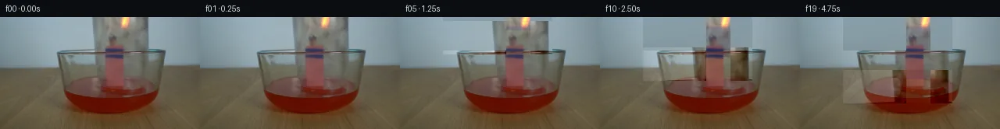

![首帧]()

Round 00
2026-11-06T09:41:08.055930+00:00像素候选变化代码 +362/−0inspection 更新
pixels b2799c748c1f4c5f · code 1421257c9f979862
查看本轮 generate.py 真实 diff
--- previous/generate.py
+++ current/generate.py
@@ -0,0 +1,362 @@
+#!/usr/bin/env python3
+"""
+generate.py — PixelWorld-Text frame generation
+Scene: Glass jar lowered over lit matchsticks in a bowl of red liquid.
+Method: Reconstruct clean background (no jar), extract jar glass overlay,
+ shift overlay downward for each animation frame, composite.
+"""
+
+import numpy as np
+from PIL import Image
+from pathlib import Path
+import sys
+
+# Import artifact_io for saving outputs
+sys.path.insert(0, str(Path(__file__).parent))
+from artifact_io import save
+
+# ── Configuration ──────────────────────────────────────────────────────
+W, H = 256, 144
+N_FRAMES = 20
+
+JAR_LEFT = 55
+JAR_RIGHT = 195
+JAR_TOP = 0
+JAR_BOTTOM = 43
+JAR_HEIGHT = JAR_BOTTOM - JAR_TOP
+
+WALL_LEFT_END = 80 # Jar left wall x-range: 55-80
+WALL_RIGHT_START = 185 # Jar right wall x-range: 185-195
+
+TOTAL_DESCENT = 68 # Total pixels the jar descends over 20 frames
+ # Frame 00: offset 0, Frame 19: offset 68
+
+def load_frame0(path="first_frame.png"):
+ """Load first frame as float64 numpy array."""
+ img = Image.open(path)
+ arr = np.array(img).astype(np.float64)
+ assert arr.shape == (H, W, 3), f"Expected {(H, W, 3)}, got {arr.shape}"
+ return arr
+
+def build_background_gradient(arr):
+ """Build a clean background gradient for the whole image.
+ Uses colors from outside the jar and below the jar to estimate
+ what the wall/table looks like behind the jar."""
+ bg = np.zeros_like(arr)
+
+ # For each y, use left and right edges as reference
+ for y in range(H):
+ # Sample left background (x=5-40) and right background (x=215-250)
+ left_bg = arr[y, 5:45].mean(axis=0) if y < H else arr[y, 5:45].mean(axis=0)
+ right_bg = arr[y, 210:250].mean(axis=0)
+
+ # Linear interpolation across the image
+ for x in range(W):
+ if x <= 40:
+ bg[y, x] = left_bg
+ elif x >= 215:
+ bg[y, x] = right_bg
+ else:
+ t = (x - 40) / (215 - 40)
+ bg[y, x] = left_bg * (1 - t) + right_bg * t
+
+ # For y > JAR_BOTTOM (where there's a bowl and no background wall visible),
+ # we need to handle the transition differently.
+ # Below y=44, the background shows bowl/match/liquid, not the wall.
+ # For the purposes of filling jar wall areas, we use the actual pixels
+ # from the scene (outside jar region).
+
+ return bg
+
+def identify_matchstick_columns(arr):
+ """Identify which x-columns contain matchstick shafts.
+ Based on the y=44-60 area where matchsticks are visible without jar glass."""
+ # Look at y=44-60 where matchsticks are below jar
+ matchstick_mask = np.zeros(W, dtype=bool)
+
+ for x in range(80, 185):
+ col_below = arr[44:60, x]
+ avg = col_below.mean(axis=0)
+ # Matchstick: brownish, not background-like
+ r, g, b = avg
+ # Background at this y is dark but matchsticks are darker/redder
+ # Check for non-background pixels (not grayish)
+ is_gray = abs(r - g) < 20 and abs(g - b) < 20
+ is_dark = r < 140
+
+ # Matchsticks are non-gray and in certain color range
… diff truncated; 275 more lines …